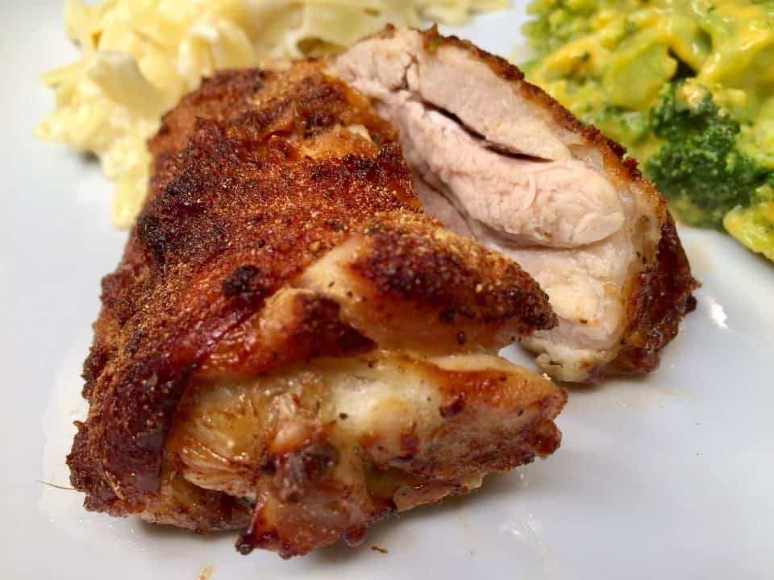

Air Fried Chicken Thighs

Description
A quick and easy recipe to make chicken thighs in an air frier
Ingredients
- 4 skin-on, boneless chicken thighs
- 2 teaspoons extra-virgin olive oil
- 1 teaspoon smoked paprika
- 3/4 teaspoon garlic powder
- 1/2 teaspoon salt
- 1/2 teaspoon ground black pepper
Recipe
- Preheat an air fryer to 400 degrees farenheit
- Pat chicken thighs dry with a paper towel and brush skins with olive oil. Place chicken thighs, skin-side down, in a single layer on a plate.
- Combine smoked paprika, garlic powder, salt, and pepper in a bowl. Sprinkle 1/2 of the seasoning mixture evenly over thighs. Turn thighs over and evenly sprinkle with remaining seasoning. Arrange thighs, skin-side up, in a single layer in the air fryer basket.
- Cook in the preheated air fryer until thighs are brown and the juices run clear, about 18 minutes. An instant-read thermometer inserted into the center should read at least 165 degrees farenheit